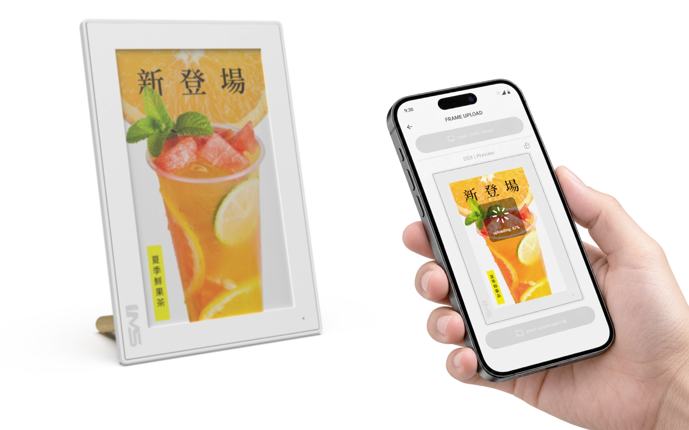
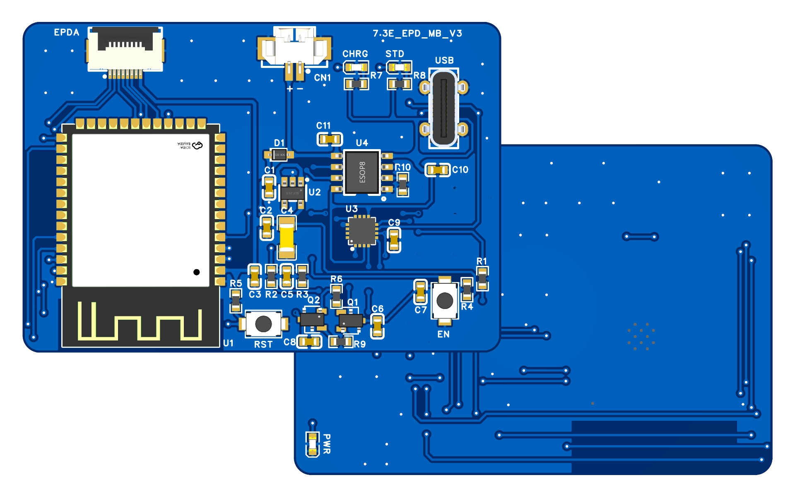

彩色電子紙桌面立牌
以手機更新桌面資訊，減少反覆印製與換紙。
餐廳與咖啡店的促銷菜單需要頻繁印製與換紙，插電螢幕又受限於桌面走線。本案選用彩色電子紙，斷電後仍保留畫面，搭配充電電池與背面按鍵喚醒；使用者可在手機上傳圖更新內容，閒置時進入低功耗狀態，也方便依不同時段替換促銷資訊，讓桌面展示更容易維護，適合放在桌邊長時間展示。
開發範圍PCB 電路與布局、MCU 韌體、Android App、工業與機構設計。

01 / ARCHITECTURE
手機更新，按鍵喚醒
因立牌無輸入介面，以 BLE 設定 Wi-Fi，再以 Wi-Fi 傳圖。
手機完成網路設定
手機探索立牌，配置現場 Wi-Fi 連線。
背面按鍵喚醒
深眠後按下立牌背面的按鍵喚醒，再進行更新。
無傳輸時自動深眠
連續 2 分鐘無傳輸，自動進入深眠。

02 / IMPLEMENTATION
電路與機構，一起配置
電路與機構共同配置，保留展示機所需的連線、顯示與操作功能。
主板配置
ESP32-S3 整合 BLE 配網、Wi-Fi 傳圖與深眠控制。
天線與狀態提示
天線在產品邊緣，LED 位於 PCB 另一面供正面狀態提示。
FPC 與電池空間
依 FPC 出線位置與電池厚度，配置主板與支架。

03 / OUTCOME
可更新的桌面展示產品
完成可由手機更新展示內容的餐廳桌面促銷立牌展示機。整合電路、韌體、Android App 與機構，並提供背面按鍵喚醒及閒置深眠功能。